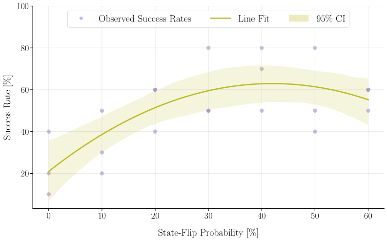

Probing Embodied LLMs: When Higher Observation Fidelity Hurts Problem Solving
探究具身大语言模型：更高观测保真度为何反而损害问题解决能力
sparse-attentionhierarchical-attentionrlhf
Oussama Zenkri, Oliver Brock
启示 · Relevance
This directly challenges your embodied safety evaluation work (SafeManip, LTLf): it suggests that your temporal safety benchmarks might need to model perceptual noise as a potential defense mechanism against repetitive unsafe action loops, rather than treating high-fidelity observation as an unqualified good.
Figure 1 : Our robotic system manipulating the Lockbox. Our Lockbox comprises two prismatic joints (sliding bars in the middle) and two revolute joints. The Lockbox is unlocked when the leftmost revolute joint, which we refer to as the target joint, is pulled. The robot employs a soft-hand end effector for manipulating the joints, an RGB-D camera for acquiring visual data, and a force-torque sensor for assessing the joint movability and guiding their manipulation.图1：我们的机器人系统操作Lockbox。我们的Lockbox包含两个棱柱关节（中间的滑动杆）和两个旋转关节。当最左侧的旋转关节（我们称之为目标关节）被拉动时，Lockbox即被解锁。机器人采用软手末端执行器来操作关节，使用RGB-D相机获取视觉数据，并利用力-扭矩传感器评估关节的可动性以指导其操作。
Summary
This paper reveals that increasing observation fidelity counterintuitively harms embodied LLM problem solving, and that moderate perceptual noise can improve performance by breaking repetitive action loops.
Key Takeaways
- Higher observation fidelity (ground-truth state) leads to worse performance than raw RGB in an embodied LLM lockbox task.
- Moderate perceptual noise (40% state-flip probability) boosts success rate by 2.85x over noise-free baseline.
- Performance gains under noise are linked to reduced repetitive action loops, not improved reasoning.
- Success rate alone is insufficient for evaluating embodied LLMs; it can conflate perceptual errors with reasoning failures.
0) Metadata
Title: Probing Embodied LLMs: When Higher Observation Fidelity Hurts Problem Solving
This paper reveals a counterintuitive finding that providing perfect state information to an embodied LLM hurts its problem-solving performance, while moderate perceptual noise improves it due to reduced action loops.
2) CRGP
C — Context
Large Language Models are increasingly used as cognitive components in robotic systems, but their decision-making in closed-loop embodied tasks remains opaque. Prior work has focused on improving LLM reasoning or perception, yet little attention has been paid to how the fidelity of observations affects behavior and success in sequential physical tasks.
R — Related work
LLMs as planners and reasoners in robotic manipulation
Embodied AI benchmarks for sequential decision-making
Effects of perceptual noise on reinforcement learning agents
Studies on action loops and repetitive behavior in LLM agents
G — Gap
Existing evaluations of embodied LLMs often assume that higher-quality observations (e.g., ground-truth state) lead to better performance. This paper identifies a surprising failure mode where perfect state information degrades performance, and shows that moderate perceptual noise can paradoxically improve outcomes—highlighting the need to study observation fidelity as a variable.
P — Proposal
The authors introduce the Lockbox, a sequential mechanical puzzle with hidden interdependencies, and evaluate LLM agents under three observation modalities (RGB, RGB-D, ground-truth symbolic state) in a physical robotic setup. They further probe behavior in simulation by randomly flipping perceived action outcomes to isolate the effect of perceptual noise.
---
4) Experiments
Main results
In physical experiments, the human-inspired strategy outperforms GPT o1 across all modalities; RGB input yields highest success, ground-truth state the lowest. In simulation, success rate peaks at 40% state-flip probability with a 2.85-fold increase over noise-free baseline. Action loop probability and success rate are negatively correlated (r = -0.69).
Ablation
Perceptual noise reduces action loop probability by ~26% at 40% flip probability compared to ground-truth baseline, before rising again at higher noise levels. This suggests the performance gain is driven by breaking repetitive action sequences rather than improved reasoning.
Limitations
['The study uses a single puzzle (Lockbox) and a specific LLM (GPT o1), limiting generalizability.', 'The mechanism behind noise-induced performance improvement is inferred from action loop reduction, not directly observed reasoning changes.', 'The physical robotic setup may introduce uncontrolled variability not fully captured in simulation.']
5) Why it matters
Challenges the assumption that more accurate perception always benefits embodied LLM agents.
Highlights the risk of conflating performance metrics with genuine reasoning ability in LLM evaluations.
Suggests that designing observation interfaces that introduce controlled noise could be a practical strategy for improving task success.
Reinforces the need for behavioral analysis (e.g., action loops) beyond aggregate success rates.
6) Next steps
[ ] Test with other LLMs (e.g., Claude, Gemini) and more complex puzzles to assess generality.
[ ] Design adaptive observation interfaces that inject noise only when action loops are detected.
[ ] Investigate whether similar noise benefits appear in other embodied tasks (e.g., navigation, assembly).
[ ] Develop metrics that disentangle reasoning quality from perceptual artifacts in closed-loop settings.
7) Scoring
5/5 = base 1 + quality 2 + observation 2
Figure 1 : Our robotic system manipulating the Lockbox. Our Lockbox comprises two prismatic joints (sliding bars in the middle) and two revolute joints. The Lockbox is unlocked when the leftmost revolute joint, which we refer to as the target joint, is pulled. The robot employs a soft-hand end effector for manipulating the joints, an RGB-D camera for acquiring visual data, and a force-torque sensor for assessing the joint movability and guiding their manipulation.图1：我们的机器人系统操作Lockbox。我们的Lockbox包含两个棱柱关节（中间的滑动杆）和两个旋转关节。当最左侧的旋转关节（我们称之为目标关节）被拉动时，Lockbox即被解锁。机器人采用软手末端执行器来操作关节，使用RGB-D相机获取视觉数据，并利用力-扭矩传感器评估关节的可动性以指导其操作。Figure 2 : Experimental setup with three input modalities for the LLM. Through our system integration, the LLM interacts with the Lockbox by selecting a joint to be manipulated, after which the corresponding new observation is forwarded to the model. Bottom: three instances of the considered input modalities. The ground-truth state (left) consists of a structured representation specifying the predefined labels of each Lockbox joint and its corresponding state. The RGB observation (middle) is captured before each interaction from a fixed viewpoint, enabling direct comparison of successive observations to infer action outcomes. The RGB-D observation (right) augments the RGB modality with an aligned depth channel, providing additional geometric information about the scene.图2：为LLM提供三种输入模态的实验设置。通过我们的系统集成，LLM通过选择要操作的关节与Lockbox交互，随后将相应的新观测结果转发给模型。底部：所考虑的三种输入模态实例。真实状态（左）由结构化表示构成，指定了每个Lockbox关节的预定义标签及其对应状态。RGB观测（中）在每次交互前从固定视角捕获，便于直接比较连续观测以推断动作结果。RGB-D观测（右）通过对齐的深度通道增强了RGB模态，提供了关于场景的额外几何信息。Figure 3 : The human-inspired strategy outperforms GPT o1 across all input modalities. The figure shows the success probability as a function of the number of interactions, comparing the human-inspired strategy to GPT o1 under different input modalities. Counterintuitively, higher input fidelity is associated with lower performance. The model performs worst under ground truth state observations, suggesting limitations in its ability to use structured state information for effective decision making.图3：受人类启发的策略在所有输入模态下均优于GPT o1。该图展示了作为交互次数函数的成功概率，比较了不同输入模态下受人类启发的策略与GPT o1的表现。反直觉的是，更高的输入保真度与更低的性能相关。模型在真实状态观测下表现最差，表明其利用结构化状态信息进行有效决策的能力存在局限性。

Figure 4 : Performance exhibits a non-monotonic dependence on perceptual noise. Success rates increase with state uncertainty, peaking at a 40% state-flip probability ( ≈ 2.85 × \approx 2.85\times the ground-truth baseline, on average), before declining at higher noise levels, suggesting that moderate noise can improve observed task performance without necessarily reflecting improved reasoning.图4：性能对感知噪声呈现非单调依赖关系。成功率随状态不确定性增加而上升，在40%状态翻转概率时达到峰值（平均约为真实状态基线的2.85倍），随后在更高噪声水平下下降，表明适度噪声可能改善观察到的任务性能，而不一定反映推理能力的提升。Figure 5 : Perceptual noise is associated with fewer action loops, which are associated with reduced performance. (a) Action loop probability and success rate are negatively correlated ( r = − 0.69 r=-0.69 , Pearson correlation), with higher engagement in action loops corresponding to lower success rates. (b) The probability of engaging in repetitive action sequences decreases with increasing perceptual noise, reaching its minimum at a 40% state-flip probability (on average, ≈ 26 % \approx 26\% lower than the ground-truth baseline), before rising again at higher noise levels. Together, these trends suggest that the observed increase in success rates under moderate noise is consistent with the reduction in repetitive action sequences.图5：感知噪声与更少的动作循环相关，而动作循环又与性能下降相关。(a) 动作循环概率与成功率呈负相关（r = -0.69，皮尔逊相关系数），动作循环参与度越高，成功率越低。(b) 重复动作序列的参与概率随感知噪声增加而降低，在40%状态翻转概率时达到最小值（平均比真实状态基线低约26%），随后在更高噪声水平下再次上升。这些趋势共同表明，在适度噪声下观察到的成功率提升与重复动作序列的减少是一致的。
Figure 1 : Our robotic system manipulating the Lockbox. Our Lockbox comprises two prismatic joints (sliding bars in the middle) and two revolute joints. The Lockbox is unlocked when the leftmost revolute joint, which we refer to as the target joint, is pulled. The robot employs a soft-hand end effector for manipulating the joints, an RGB-D camera for acquiring visual data, and a force-torque sensor for assessing the joint movability and guiding their manipulation.图1：我们的机器人系统操作Lockbox。我们的Lockbox包含两个棱柱关节（中间的滑动杆）和两个旋转关节。当最左侧的旋转关节（我们称之为目标关节）被拉动时，Lockbox即被解锁。机器人采用软手末端执行器来操作关节，使用RGB-D相机获取视觉数据，并利用力-扭矩传感器评估关节的可动性以指导其操作。Figure 2 : Experimental setup with three input modalities for the LLM. Through our system integration, the LLM interacts with the Lockbox by selecting a joint to be manipulated, after which the corresponding new observation is forwarded to the model. Bottom: three instances of the considered input modalities. The ground-truth state (left) consists of a structured representation specifying the predefined labels of each Lockbox joint and its corresponding state. The RGB observation (middle) is captured before each interaction from a fixed viewpoint, enabling direct comparison of successive observations to infer action outcomes. The RGB-D observation (right) augments the RGB modality with an aligned depth channel, providing additional geometric information about the scene.图2：为LLM提供三种输入模态的实验设置。通过我们的系统集成，LLM通过选择要操作的关节与Lockbox交互，随后将相应的新观测结果转发给模型。底部：所考虑的三种输入模态实例。真实状态（左）由结构化表示构成，指定了每个Lockbox关节的预定义标签及其对应状态。RGB观测（中）在每次交互前从固定视角捕获，便于直接比较连续观测以推断动作结果。RGB-D观测（右）通过对齐的深度通道增强了RGB模态，提供了关于场景的额外几何信息。Figure 3 : The human-inspired strategy outperforms GPT o1 across all input modalities. The figure shows the success probability as a function of the number of interactions, comparing the human-inspired strategy to GPT o1 under different input modalities. Counterintuitively, higher input fidelity is associated with lower performance. The model performs worst under ground truth state observations, suggesting limitations in its ability to use structured state information for effective decision making.图3：受人类启发的策略在所有输入模态下均优于GPT o1。该图展示了作为交互次数函数的成功概率，比较了不同输入模态下受人类启发的策略与GPT o1的表现。反直觉的是，更高的输入保真度与更低的性能相关。模型在真实状态观测下表现最差，表明其利用结构化状态信息进行有效决策的能力存在局限性。Figure 4 : Performance exhibits a non-monotonic dependence on perceptual noise. Success rates increase with state uncertainty, peaking at a 40% state-flip probability ( ≈ 2.85 × \approx 2.85\times the ground-truth baseline, on average), before declining at higher noise levels, suggesting that moderate noise can improve observed task performance without necessarily reflecting improved reasoning.图4：性能对感知噪声呈现非单调依赖关系。成功率随状态不确定性增加而上升，在40%状态翻转概率时达到峰值（平均约为真实状态基线的2.85倍），随后在更高噪声水平下下降，表明适度噪声可能改善观察到的任务性能，而不一定反映推理能力的提升。Figure 5 : Perceptual noise is associated with fewer action loops, which are associated with reduced performance. (a) Action loop probability and success rate are negatively correlated ( r = − 0.69 r=-0.69 , Pearson correlation), with higher engagement in action loops corresponding to lower success rates. (b) The probability of engaging in repetitive action sequences decreases with increasing perceptual noise, reaching its minimum at a 40% state-flip probability (on average, ≈ 26 % \approx 26\% lower than the ground-truth baseline), before rising again at higher noise levels. Together, these trends suggest that the observed increase in success rates under moderate noise is consistent with the reduction in repetitive action sequences.图5：感知噪声与更少的动作循环相关，而动作循环又与性能下降相关。(a) 动作循环概率与成功率呈负相关（r = -0.69，皮尔逊相关系数），动作循环参与度越高，成功率越低。(b) 重复动作序列的参与概率随感知噪声增加而降低，在40%状态翻转概率时达到最小值（平均比真实状态基线低约26%），随后在更高噪声水平下再次上升。这些趋势共同表明，在适度噪声下观察到的成功率提升与重复动作序列的减少是一致的。

![Figure 2 : Experimental setup with three input modalities for the LLM. Through our system integration, the LLM interacts with the Lockbox by selecting a joint to be manipulated, after which the corresponding new observation is forwarded to the model. Bottom: three instances of the considered input modalities. The ground-truth state (left) consists of a structured representation specifying the predefined labels of each Lockbox joint and its corresponding state. The RGB observation (middle) is captured before each interaction from a fixed viewpoint, enabling direct comparison of successive observations to infer action outcomes. The RGB-D observation (right) augments the RGB modality with an aligned depth channel, providing additional geometric information about the scene.](figures/1161/fig_002.png)
![Figure 3 : The human-inspired strategy outperforms GPT o1 across all input modalities. The figure shows the success probability as a function of the number of interactions, comparing the human-inspired strategy to GPT o1 under different input modalities. Counterintuitively, higher input fidelity is associated with lower performance. The model performs worst under ground truth state observations, suggesting limitations in its ability to use structured state information for effective decision making.](figures/1161/fig_003.png)
![Figure 5 : Perceptual noise is associated with fewer action loops, which are associated with reduced performance. (a) Action loop probability and success rate are negatively correlated ( r = − 0.69 r=-0.69 , Pearson correlation), with higher engagement in action loops corresponding to lower success rates. (b) The probability of engaging in repetitive action sequences decreases with increasing perceptual noise, reaching its minimum at a 40% state-flip probability (on average, ≈ 26 % \approx 26\% lower than the ground-truth baseline), before rising again at higher noise levels. Together, these trends suggest that the observed increase in success rates under moderate noise is consistent with the reduction in repetitive action sequences.](figures/1161/fig_005.png)